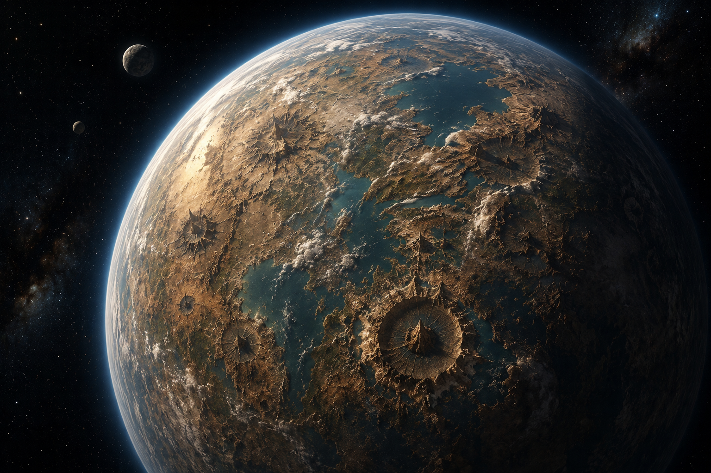
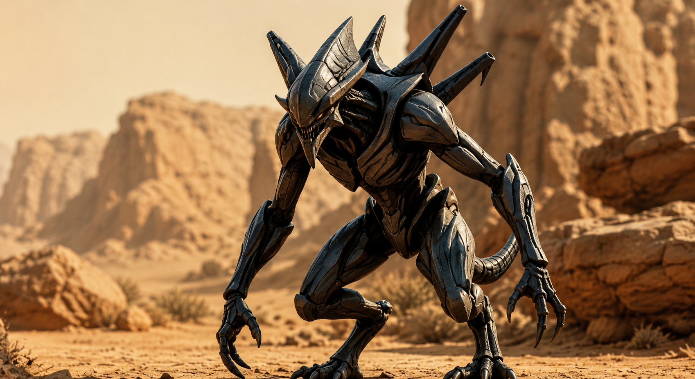
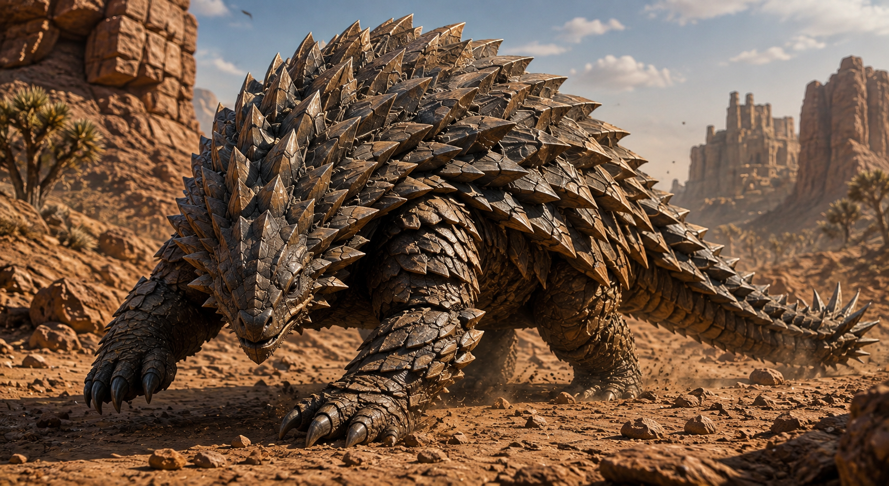
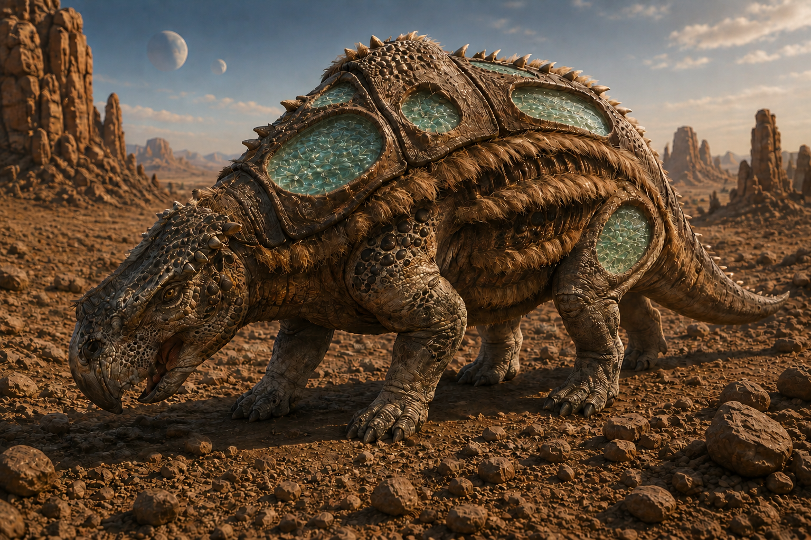
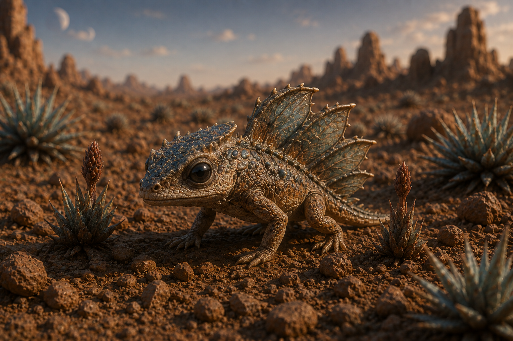
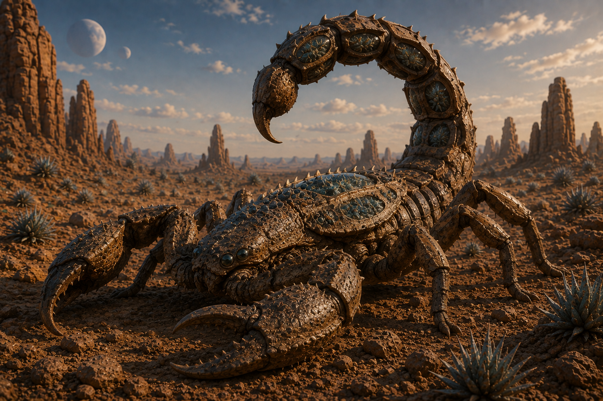
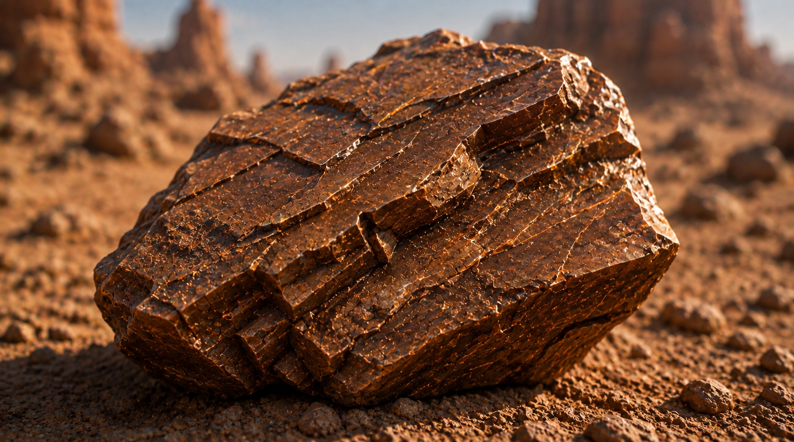

Kalagor
Nombre del sistema
Sistema Klaimiian
Tamaño del planeta
12,742 km de diámetro (Tamaño estándar)
Número de lunas
2 Lunas (Phobos-K y Deimos-K)
Tipo de planeta
Planeta terrestre, mayormente rocoso o desértico
Temperatura
De día en la mayoría de Kalagor hace una temperatura extremadamente alta de entre 43 y 60 grados Celsius.
De noche la temperatura baja drásticamente, llegando a entre 5 y -10 grados Celsius.
Fenómeno meteorológico
Tormentas de Sílice y Cristal
Vientos de más de 120 km/h en la superficie exterior que arrastran polvo abrasivo y espinas cargadas de energía. Un fenómeno peligroso por las púas de Cactús de Cristal Kalarianos que viajan a 120 km/h, ya que al impactar el daño pueede ser devastador.
Nieblas de Inversión en Cráteres
Durante la madrugada, el vapor de Dilugua se condensa en los bordes de los cráteres formando murallas de niebla que protegen los ecosistemas cerrados del calor del mediodía.
Maelstroms Térmicos
Corrientes ascendentes de aire caliente provocadas por la roca Kalmario, utilizadas por el Dragon Cratalock para desplazarse sin gastar energía. Un momento idóneo para ascender utilizando parapentes o cualquier objeto o nave aéreos.
Biomas
Kalagor está formado mayoritariamente por un bioma, bioma desértico. Está compuesto principalmente por extensos desiertos rocosos y grandes cráteres que, en su interior, ocultan vastos oasis y ecosistemas marinos cerrados. La superficie exterior es árida y castigada por vientos intensos, mientras que las depresiones geográficas rebosan de vida y humedad.
Razas alienígenas residentes

Klagors
Raza de categoría estándar nativa de este mundo. Son buenos cazadores y guerreros, son la única raza que ha salido del planeta.
Población: ~5.500.000 individuos
Velorians
Raza de gran velocidad, nunca han tenido problemas dada su elevada velocidad que les permite alcanzar y superar con creces a vehículos terrestres.
Población: ~3.00.000 individuos
Gigantodones
Raza pacífica de gran tamaño y fuerza, adaptada para sobrevivir en las condiciones extremas del planeta. Pese a su gran tamaño no requieren cantidadews ingentes de alimento.
Población: ~500.000 individuos
Xenoblion
Gran depredador adaptado tanto a las cavernas como a la superficie, el Xenoblion es una criatura feroz y poderosa que domina sobre todo los entornos subterráneos de Kalagor, es un depredador muy peligroso dada su gran resistencia física que lo permite aguantar disparos y golpes de gran potencia.

Arimio
Criatura grande, de unos 2 metros de altura y 7 de longitud, muy resistente y adaptada a las condiciones extremas del planeta. Tiene la capacidad de rodar sobre si mismo alcanzando velocidades de hasta 140 kilometros por hora. Una gran criatura contra la que es muy complicado luchar.

Dragon Cratalock
Criatura alada gigante y poderosa, con una piel resistente y garras afiladas. Una criatura voladora que alcanza los 20 metros de envergadura, 4 de altura y 12 de longitud.

Watalon
Criatura de unos 1.8 metros de altura, pacífica. Esta criatura la utilizan los Klagors para recoger agua y poder transportarla, dado a que esta criatura puede almacenar grandes cantidades de dilugua, un tipo de agua que hidrata muchísimo más que la que nosotros conocemos.

Grilyx
Criatura de unos 35 centímetros de longitud, es pequeña y escurridiza, se alimentan de insectos, siendo una excelente criatura a tener cerca dada la peligrosidad de algunos insectos del planeta. Su larga y rápida lengua le da la capacidad de cazar en pleno vuelo a los insectos que merodean por la zona.

Chinis Kalagorianas
Criatura insectoide pequeña de unos 5 centimetros, muy peligrosa dado su veneno que es capaz de paralizar un cuerpo humano en cuestión de segundos y dejándolo inmóvil por unas 27 horas. Sin duda una pequeña amenaza de la que es mejor alejarse.

Scormix
Criatura nocturna de unos 12 metros de longitud, es un depredador nocturno extremadamente peligroso dado a su potente veneno que puede llegar a incluso matar a un Gigantodon, su único depredador natural es el Dragon Cratalock. Viven en cuevas, donde pueden resguardarse de sus depredadores naturales.

Lagarto Kalariano
Criatura de unos 55 centímetros de longitud, es el depredador natural de las Chinchis Kalarianas, este lagarto no ataca a criaturas más grandes que ella misma, es pacífica con el resto, de hecho es la mascota favorita de los Klagors.

Cactus de Cristal Kalariano
Cactus capaz de almacenar grandes cantidades de energía y reflejar la radiación estelar mediante espinas de cuarzo, además en el centro de la planta se encuentra un núcleo energético que le permite almacenar y liberar grandes cantidades de energía. Sus púas son prácticamente explosivos, pues al golpear bruscamente una superficie explotan liberando el cristal del exterior y la energía del interior.

Bomba acuifera
Planta exótica capaz de almacenar grandes cantidades de agua en unas "bolsas" que pueden tener agua concentrada capaza de hidratar hasta un 80% más que el agua corriente de la tierra. Además la resistencia de esta planta permite llevar estos contenedores de agua encima sin problemas. Sin duda una planta que puede salvarte la vida de morir de deshidratación.

Cristales Kalarianos
Estos cristales pueden almacenar una gran cantidad de energía, pueden ser utilizaros para transportarla o como arma, dado a que al ser golpeados estos cristales explotan brutamente lanzado pedazos de cristales por todas partes y desplegando una gran ola de energía.

Kalmario
Tiene una gran resistencia para ser una roca, tiene una resistencia al daño tan elevada que las balas de armas convencionales rebotan en su superficie y balas de armas como el barret simplemente marcan el material, sin duda un excelente material de contrucción.

Nucleo Deserticron
Una esfera que contiene una cantidad de energía ridículamente alta, capaz de mantener naves, instalaciones y vehículos en funcionamiento durante períodos prolongados. Se calcula que puede proporcionar energía suficiente para mantener una ciudad pequeña durante unos 16 meses. Es muy buscado pero, su aparición en el planeta es tan escasa que se suele recurrir a otras fuentes de energía.